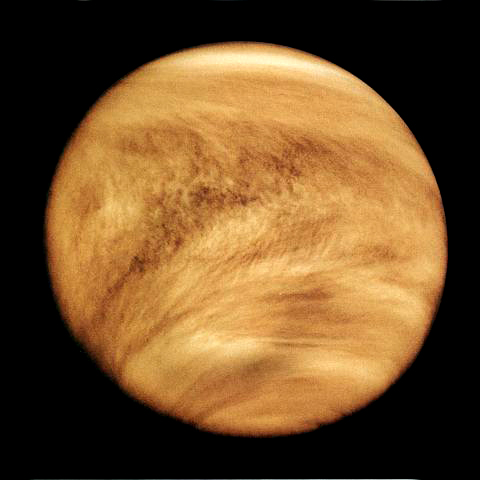

Il sistema solare
Il sistema solare è il sistema planetario costituito da una varietà di corpi celesti mantenuti in orbita dalla forza di gravità del Sole; vi appartiene anche la Terra. È costituito da otto pianeti, dai rispettivi satelliti naturali, da cinque pianeti nani e da miliardi di corpi minori.
In ordine di distanza dal Sole, gli otto pianeti sono: Mercurio, Venere, Terra, Marte, Giove, Saturno, Urano e Nettuno.
Sei dei pianeti e tre dei pianeti nani hanno in orbita attorno a essi dei satelliti naturali; inoltre tutti i pianeti esterni sono circondati da anelli planetari, composti di polvere e altre particelle.
Sole

Il Sole è la stella madre del sistema solare, e di gran lunga il suo principale componente. La sua grande massa gli permette di sostenere la fusione nucleare, che rilascia enormi quantità di energia, per la maggior parte irradiata nello spazio come radiazione elettromagnetica, in particolare luce visibile.
Mercurio
Mercurio (0,4 UA) è il pianeta più vicino al Sole ed è il pianeta più piccolo (0,055 masse terrestri). Mercurio non possiede satelliti naturali e le sue sole formazioni geologiche conosciute, oltre ai crateri da impatto, sono creste sporgenti o rupes, probabilmente prodotte durante una fase di contrazione avvenuta nella sua storia primordiale.
Venere
Venere (0,7 UA) è per dimensioni molto simile alla Terra (0,815 masse terrestri), e, come la Terra, ha un mantello composto da silicati attorno a un nucleo ferroso, possiede un'atmosfera e l'attività sulla sua superficie rende evidente la presenza di attività geologica interna.
Terra
Terra (1 UA) è il più grande e denso dei pianeti interni, l'unico in cui sono conosciute attuali attività geologiche, ed è l'unico pianeta del sistema solare che permette la vita. La sua idrosfera liquida è unica tra i pianeti interni, ed è anche l'unico pianeta dove siano state osservate placche tettoniche. L'atmosfera terrestre è estremamente differente rispetto a quella degli altri pianeti, poiché è stata alterata dalla presenza della vita e contiene il 21% di ossigeno. Possiede un satellite naturale, la Luna.
Marte
Marte (1,6 UA) è più piccolo della Terra e di Venere (0,107 masse terrestri). Possiede un'atmosfera tenue, composta principalmente da anidride carbonica. La sua superficie, costellata di vulcani, come il grande Olympus Mons, e da rift valley, come la Valles Marineris, mostra attività geologica che ha persistito fino a tempi relativamente recenti.
Giove

Giove (5,2 UA), con 318 masse terrestri, possiede 2,5 volte la massa di tutti gli altri pianeti messi insieme. Esso è composto in larga parte da idrogeno ed elio. Il forte calore interno di Giove crea una serie di caratteristiche semipermanenti nella sua atmosfera, come ad esempio la famosa Grande Macchia Rossa. Giove ha 63 satelliti naturali conosciuti: i quattro più grandi, Ganimede, Callisto, Io, e Europa, mostrano analogie con i pianeti terrestri, come fenomeni di vulcanismo e calore interno.
Saturno
Saturno (9,5 UA), distinto dal suo sistema di anelli, ha diverse analogie con Giove, come la sua composizione atmosferica. Saturno è molto meno massiccio, essendo solo 95 masse terrestri. Sono noti 60 satelliti (più tre non confermati), due dei quali, Titano e Encelado, mostrano segni di attività geologica, anche se sono in gran parte criovulcani.
Urano

Urano (19,6 UA), con 14 masse terrestri, è il pianeta esterno meno massiccio. Unico tra i pianeti, esso orbita attorno al Sole con una inclinazione assiale superiore a 90° rispetto all'eclittica forse data da un impatto con un altro corpo di 275 masse terrestri durante la sua formazione. Ha un nucleo molto freddo rispetto agli altri giganti gassosi, quindi irradia pochissimo calore nello spazio. Urano ha 27 satelliti noti, tra cui i più grandi sono Titania, Oberon, Umbriel, Ariel e Miranda.
Nettuno
Nettuno (30 UA), anche se leggermente più piccolo di Urano, è più massiccio (equivalente a 17 masse terrestri) e quindi più denso. Esso irradia più calore interno rispetto a Urano, ma non tanto quanto Giove o Saturno. Nettuno ha 13 satelliti noti. Il più grande, Tritone, è geologicamente attivo, con geyser di azoto liquido. Tritone è l'unico grande satellite con orbita e direzione retrograda. Nettuno è accompagnato nella sua orbita da una serie di planetoidi che sono in risonanza orbitale 1:1 con esso.